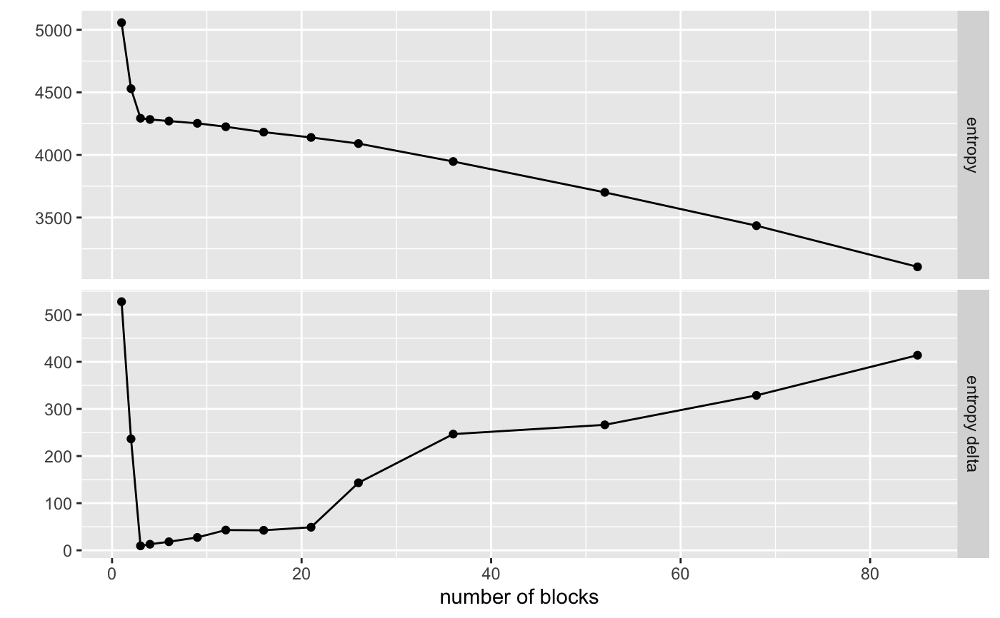
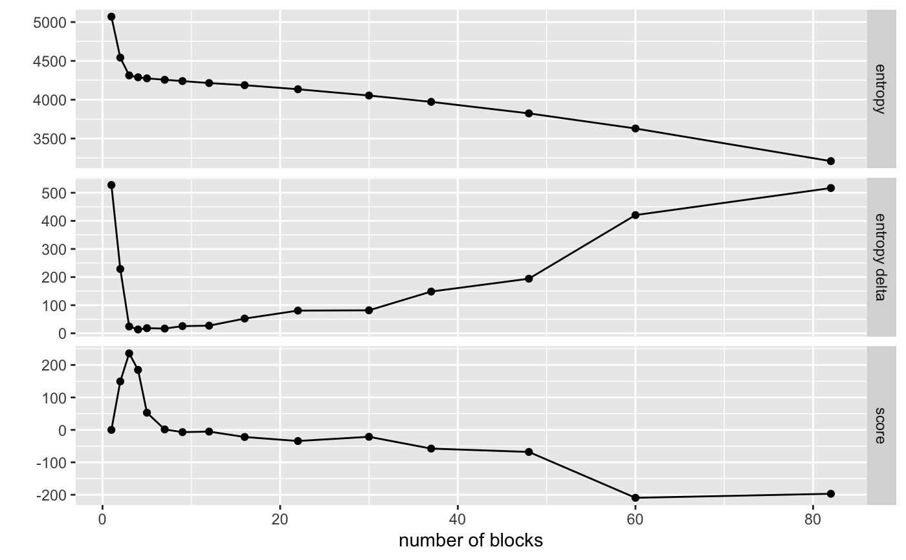
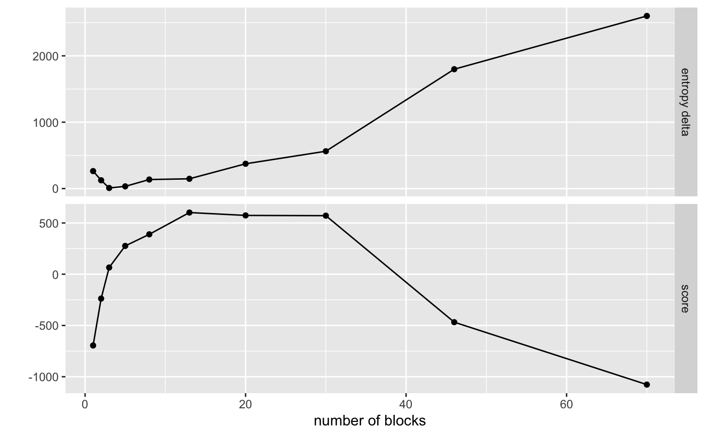

R/visualize_collapse_results.R
visualize_collapse_results.RdPlots entropy against number of blocks left for a collapse run. If
heuristic is set to value other than NULL a second plot of the score for
each merger step according to the heuristic provided is also shown.
visualize_collapse_results(sbm, heuristic = NULL, use_entropy = FALSE)
| sbm | Object of class |
|---|---|
| heuristic | How the best partitioning is defined. Takes either a
function that takes one/two arguments: an entropy vector and an optional
number of blocks vector with each element corresponding to a given
location, or a string labeling algorithm. Currently only |
| use_entropy | Should the score be calculated with the entropy of the
collapse? If |
GGplot object comparing the fit results and each step's deviance from the rolling mean
Either collapse_run, or collapse_blocks(report_all_steps = TRUE) must be run prior to calling this function. (See
collapse_blocks.)
Other visualizations:
visualize_mcmc_trace(),
visualize_network(),
visualize_propensity_dist(),
visualize_propensity_network()
set.seed(42) # Start with a random networ and run agglomerative clustering with no # intermediate MCMC steps on sbm of simulated data net <- sim_basic_block_network(n_blocks = 3, n_nodes_per_block = 35) %>% collapse_blocks(sigma = 1.5) # ============================================================================= # Visualize using no heuristic visualize_collapse_results(net)# ============================================================================= # Visualize using deviance from rolling average heuristic visualize_collapse_results(net, heuristic = 'dev_from_rolling_mean')# ============================================================================= # Visualize using custom heuristic # Score heuristic that fits a nonlinear model to observed values and chooses by # largest negative residual (built into package as heuristic = "nls_residual") nls_score <- function(e, k){ entropy_model <- nls(e ~ a + b * log(k), start = list(a = max(e), b = -25)) -residuals(entropy_model) } visualize_collapse_results(net, heuristic = nls_score)